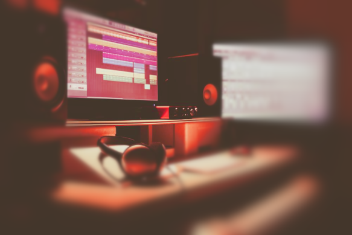

About
Carey Smith. Artist and musician living in New Orleans, LA.
bio
Carey Smith is a musician and artist from Seattle, Washington living in New Orleans. Louisiana.
Carey is a trained jazz trombonist that has been playing since he was seven years old. Carey’s
focus is both big band and combo music, and he has competed in high level jazz competitions
in Reno, Nevada; Moscow, Idaho and Sacramento, California. Carey is a classically trained
trombone player, who was mentored by his private teacher, Colin Pulprabek. Carey also
produces midi music through DAW’s like Logic and FL Studio. As an artist, Carey’s focus is
photorealistic pencil art. Carey grew up around art his whole life, both his parents are trained
professionals in the art world. Carey started drawing at 10 years old and is now doing
commissions for artwork. Currently, Carey is a student at loyola university new orleans, where
he studies music industry and plays jazz. He plans to finish school and get a degree in music
industry while still continuing art and music.
